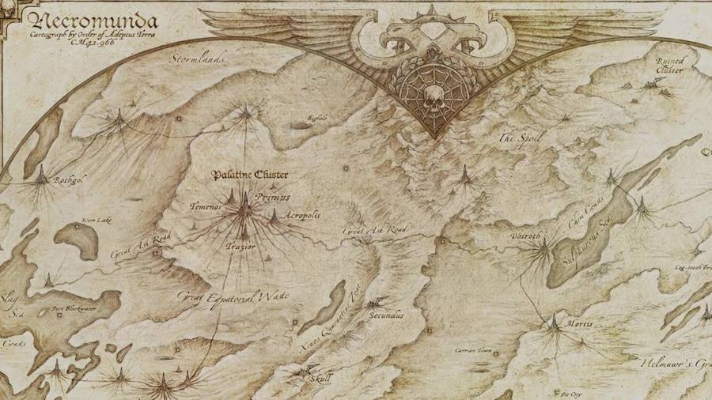
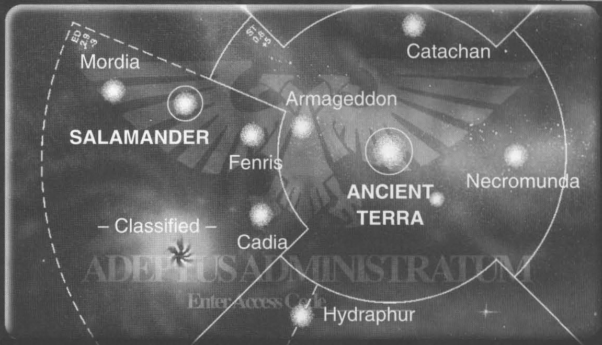

Necromunda
| Necromunda | |
|---|---|
| Formerly Araneus Prime | |
 Adeptus Terra survey map of Necromunda, c. 966.M41 | |
| System | Necromunda System |
| Segmentum | Segmentum Solar |
| Sector | Not recorded in open archives[a] |
| Classification | Hive world; Adeptus Astartes recruiting world (Imperial Fists) |
| Ruler | Imperial Commander Lord Gerontius Helmawr of House Helmawr (since at least c. 700.M41[b]) |
| Population | Over 100 billion (estimated; last partial census c. 000.M37) |
| Capital | Hive Primus (the Palatine) |
| Tithe grade | Exactis Extremis |
| Brought to compliance | Late M30 |
| Known for | Lasguns, autoguns and munitions; the Necromundan Guard; the underhive and its gangs |
Necromunda, originally Araneus Prime, is a hive world of the Segmentum Solar, a short distance from Terra. Its surface is covered by vast hive cities rising out of poisonous ash deserts, and its population, never fully counted, is believed to exceed one hundred billion. It is among the most productive arsenal worlds of the Imperium of Mankind, supplying the Astra Militarum with lasguns, autoguns, bolters and ammunition, and raising the regiments of the Necromundan Guard. The Imperial Fists keep a recruitment keep on the planet and draw many of their Neophytes from its underhive gangs.[1][2]
The world was once the capital of the Araneus Continuity, a small human realm of the Age of Strife linked by ancient warp gates. Brought to compliance by the Imperial Fists in the late 30th millennium, it was nearly destroyed in the same campaign by an unknown enemy that came through the gates, and it took its present name, "the world of death", from that ordeal. Since then it has been ruled, under the Imperium, by the dynasty of House Helmawr, which has held the planet for at least seven thousand years.[2][3]
History
[edit]The Araneus Continuity
[edit]Araneus Prime was settled during the Dark Age of Technology, probably in the 22nd or 23rd millennium, as a mining and manufacturing colony.[c] During the Age of Strife its rulers, a caste of augmented technobility, kept contact with neighbouring systems through a network of warp gates of unknown origin, and the worlds they held became the Araneus Continuity, a realm of iron towers and heavy industry.[2]
Compliance and the burning
[edit]The Imperium learned of the Continuity in the late 30th millennium, when a squadron returning from the Gehenial Prosecution of the Great Crusade was forced out of the warp in one of its systems and boarded by cyber-grafted soldiers. The technobility refused the Emperor's demand for fealty and invited Him instead to become their tributary. The task of compliance was given to the Imperial Fists under Hashin Yonnad, captain of the Legion's 39th Household. Yonnad massed his fleet at Tallarn, with more than twenty thousand Legionaries and millions of soldiers of the Imperial Army and the Mechanicum, and in two months reduced the Continuity to Araneus Prime alone, whose rulers then surrendered.[2][3]
As the Imperium moved to occupy the Continuity, an enemy that the records describe only as "a darkness deeper than the void" and "flame-wreathed chrome" emerged from the warp gates. Six systems burned. Yonnad chose to defend some worlds and abandon others, and finally had warheads detonated in every gate. The attackers vanished when the gates were destroyed, but the explosion of the gate at Araneus Prime and the fighting around it cracked its world-city and left its surface ash. All other systems of the Continuity were lost. The Imperium renamed the surviving planet Necromunda.[2][d]
House Helmawr and the long industry
[edit]
In the millennia after the Horus Heresy (005–014.M31), Necromunda was rebuilt as a manufacturing world. Its mountains were mined away and its seas turned into chemical sinks, and its hives grew into new man-made ranges. The ruling family, House Helmawr, appears in the records at least seven thousand years before the present, from about M34, and documents of earlier government have not survived.[2] An Administratum attempt to count the population of Trazior Hive in the 37th millennium (c. M37) found about a billion people in the upper levels alone; no census of the planet has been attempted since.[2]
Necromunda's nearness to Terra has kept it under the eye of the Adeptus Terra. Its weapon-shops supplied the Imperial Guard through the Age of Apostasy (M36) and the Macharian Crusade (392–399.M41), and the Imperial Fists have recruited from it throughout the post-Heresy era.[4]
Era Indomitus
[edit]After the Fall of Cadia and the opening of the Great Rift in 999.M41, a rebellion broke out on Necromunda. According to the records of the Indomitus Crusade, it ended without battle when word came that a fleet of the Indomitus Crusade was approaching.[5] Necromunda lies in the Imperium Sanctus, and its factories have been among the principal suppliers of the crusade fleets since c. 000.M42.[5]
Timeline
[edit]| Date | Event |
|---|---|
| c. M22–M23 (estimated) | Araneus Prime settled as a mining colony |
| M25–M30 | Age of Strife; the Araneus Continuity rules its gate-linked worlds |
| Late M30 | Compliance by the Imperial Fists under Hashin Yonnad; destruction of the warp gates; world renamed Necromunda |
| c. M34 | Earliest surviving records of House Helmawr's rule |
| c. M37 | Partial census of Trazior Hive |
| c. 966.M41 | Adeptus Terra survey map of the planet |
| c. 000.M42 | Rebellion ended by the approach of the Indomitus Crusade |
Geography
[edit]
Little of Necromunda's natural surface survives. Between the hives lie the Ash Wastes, deserts of industrial ash beneath a permanent layer of polluted cloud, from which the hive spires rise like islands. Hives are joined in clusters and linked by armoured ash trains that run on tracks across the wastes. Nomadic mutant tribes known as Ash Raiders live in the wastes and prey on the trains.[2]
The largest and oldest hive is Hive Primus, called the Palatine, in whose central spire Lord Helmawr has his palace. Its spaceport is the only one on the planet, and an orbital ring above it is the sole authorised route for off-world trade, which gives House Helmawr control of every import and export.[2] Each hive is divided vertically into the Spire, home of the nobility; the Hive City, where the workers live and labour; the Underhive, the ruined lower levels; and the Sump, a lake of waste at the base.[2]
Society
[edit]Necromunda has no central administration in the ordinary sense. Its people owe loyalty to patrons, who owe it in turn to greater lords, up to the Imperial Commander. Lord Helmawr is answerable to the Imperium only for the tithe, which is paid as a share of everything the planet produces, for regiments for the Astra Militarum, and for the control of mutants. So long as he meets these duties the Adeptus Terra leaves him to rule as he wishes.[2][1]
Below House Helmawr stand the noble houses of the Spire, of which seven formed the inner circle at the close of the 41st millennium, and below them the six Clan Houses of Hive Primus, each holding a monopoly on a branch of industry: House Goliath (heavy industry), House Escher (chemicals and pharmaceuticals), House Orlock (metals and ore), House Van Saar (technology), House Delaque (information) and House Cawdor (waste reclamation and the Imperial Cult). The Clan Houses compete through proxy wars fought by gangs in the Underhive, and the Imperial Fists have long chosen recruits from among the survivors.[2][4]
Real food is an expensive import. Most of the population lives on synthetic food recycled from organic waste, known as corpse-starch. Order is kept in the hives by Helmawr's enforcers, the Palanite Enforcers, rather than by the Adeptus Arbites, whose presence on the planet is limited to its Imperial offices.[2]
See also
[edit]Notes
[edit]- ^ The sector is not given in the Administratum records available to this encyclopedia; the world lies a short warp passage from Terra.
- ^ Gerontius Helmawr's accession date is not recorded; his reign, prolonged by juvenat treatments, is estimated from Administratum tithe returns.
- ^ The date of settlement is estimated from the statement in Necromundan archives that the world was first colonised "more than fifteen thousand years" before the 41st millennium.
- ^ The identity of the enemy is not recorded in open archives. Some Mechanicus commentators have linked its description to the Necrons, but no Imperial authority has confirmed this.
References
[edit]- ^ a b Codex Imperialis (rev. 980.M41). Adeptus Terra.
- ^ a b c d e f g h i j k l m Departmento Munitorum (c. 966.M41). Survey of the Necromundan Hives. Administratum Archive, Terra.
- ^ a b Chronicles of the Heresy (sealed). Logos Historica Verita, Terra.
- ^ a b Imperial Infantryman's Uplifting Primer (rev. 990.M41). Departmento Munitorum.
- ^ a b Records of the Indomitus Crusade (ongoing). Office of the Lord Commander.